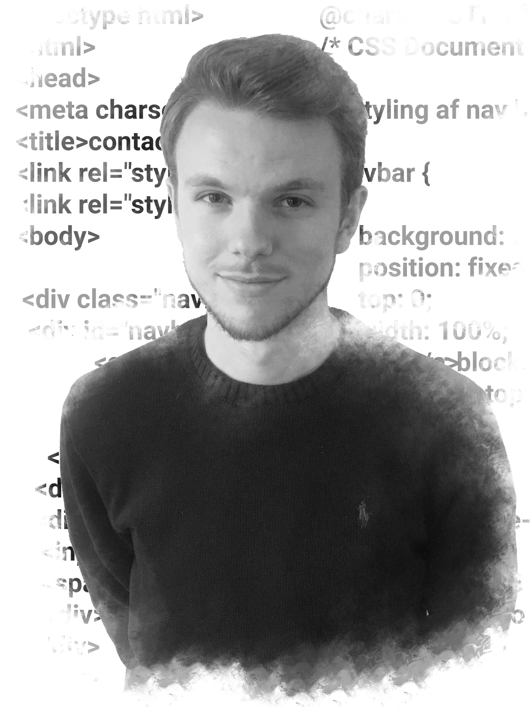
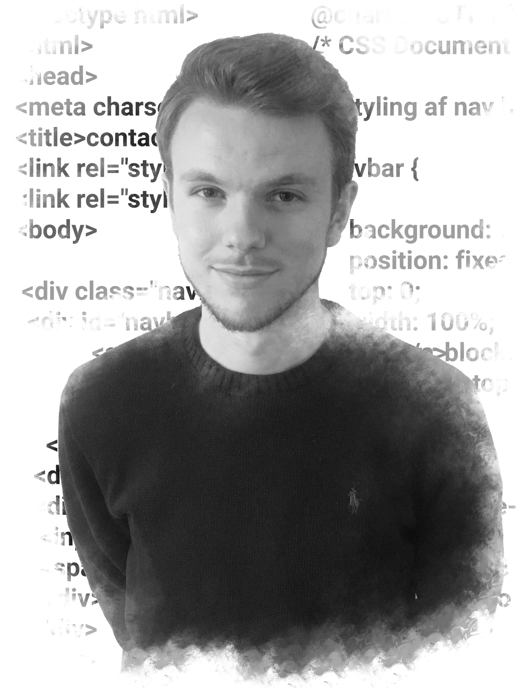

Jeg vil her reflektere tilbage over min læringsproces det 1. semester på CPH Business. Vi har gennemgående arbejdet med flere forskellige værktøjer men det har primært været programmer fra Adobe Creative Cloud. Det indebærer Photoshop, Dreamweaver, Illustrator og Experience Design (XD). Jeg vil derfor her gennemgå de forskellige programmer og dets funktioner. Derved vil man kunne se en udvikling af mit kendskab og mine færdigheder med programmerne. Udover det vil man kunne se hvor jeg finder mine stærke sider og hvor langt jeg er fra mit mål med programmerne.
Adobe Photoshop er et billedbehandlingsprogram, som man kan bruge til mange formål. For at nævne et par ting jeg har anvendt programmet til, har dette været billedredigering og manipulation med billeder. Nedenfor vil man kunne se det første billede jeg arbejdede med i flow 1 af dette semester.
På dette billede har jeg først valgt at fjerne de gule skilte og de små huller på tårnet til højre. Derudover har jeg fjernet menneskerne på broen, lysmasten samt lygtepælen. Jeg har tilføjet frihedsgudinden til højre, krokodillen til venstre og bådene under broen. Himlen har jeg også valgt at skifte ud. Denne opgave fungerede godt til at introducere en for de forskellige værktøjer man har med Photoshop.
Til denne portfolio har jeg anvendt Photoshop til at redigere to billeder som vist nedenfor til min forside. Dette har jeg beskrevet nærmere i flow 5 i projekter.
 

Adobe Experience Deign også kaldet XD, er det næste program vi blev introduceret for. XD er et prototypeværktøj, hvor man meget simpelt kan designe og afprøve sine idéer til mobil- og webbaserede løsninger. I flow 1, skulle vi udarbejde vores første portfolio i dette program.
I flow 3 skulle vi bygge en app til både telefon og tablet. Jeg har udover det også anvendt dette program når jeg skulle redesigne mine tidligere opgaver til denne portfolio. Dette kan man læse mere om i flow 1 og flow 3 i projekter.

Adobe Dreamweaver er et softwareprogram også kaldet en editor til hjemmesideprogrammering. Vi blev for første gang introduceret for programmet i flow 2, hvor vi efterfølgende har arbejdet med HTML, CSS, JavaScript og jQuery. Vi har derfor i flow 2 og flow 4 arbejdet med grundkodning og responsivt design indenfor de tidligere nævnte computersprog.
For at læse mere om udviklingen af hjemmesiderne kan man gøre dette i flow 2 og flow 4. Hvis man samtidigt vil læse mere om udviklingen af denne portfolio kan man dette i flow 5.

Adobe Illustrator et tegneprogram også kaldet en vektorgrafisksoftware. Med dette værktøj kan man skabe logoer, ikoner, tegninger, typografi og illustrationer. Vi blev for første gang introduceret for dette program i flow 3, hvor vi skulle designe vores egne ikoner. Her valgte jeg at designe fem forskellige ikoner indenfor sportsgenren til en iPhone. Dette indebærer et ikon for fodbold, amerikansk fodbold, basketball, boksning og baseball.
I flow 3 skulle vi også bygge en app, hvor der skulle inddrages ikoner. Dertil lavede jeg en sportstrackingapp med fokus på basketball. Her udrettede jeg ni forskellige ikoner/ illustrationer til appen.
Til denne portfolio har jeg benyttet mig af illustrator til at designe mit logo samt mine ikoner for de sociale medier LinkedIn, Facebook og Instagram. De er blevet anvendt på kontaktsiden, men selve designprocesen kan man læse mere om i flow 5.